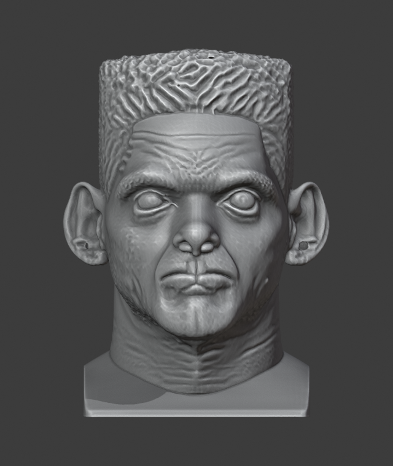
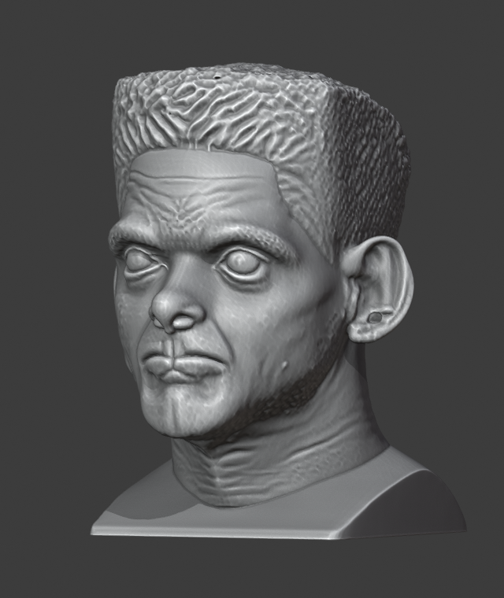
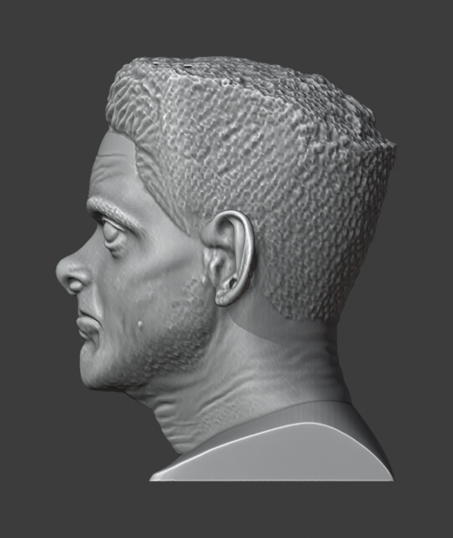

Free generation and GLB download succeeded. Likeness remains unapproved.
These gray images are actual Blender renders of the downloaded mesh. The input is a separate reference image. No facial reshaping, skin projection or generated concept image is presented as the mesh.



The brow and nose are exaggerated, and the generated surface adds wrinkles that make the face look older. This single mesh has no separate eyeballs, UVs or rig. The Guilty Gear inspired materials have not been applied.
Open Blender review · Original GLB · Mesh inspection · Source demo